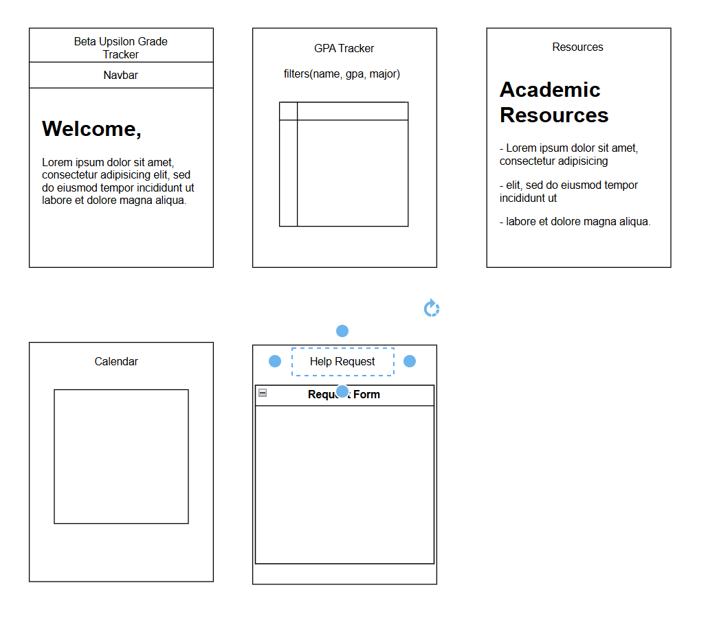

Project Overview
This webpage outlines the initial plan for a Grade Tracker web application that I will be building for the Beta Upsilon chapter of Lambda Chi Alpha at UNC Charlotte. The goal of the project is to support academic success and transparency within the fraternity.
Purpose
The purpose of this web application is to provide fraternity members with a tool to view academic requirements, track GPA standings (read-only), and access academic support resources. The system will be designed to foster accountability and encourage academic excellence among members.
Planned Features
- A homepage with an overview and announcements
- A GPA tracking dashboard
- An academic resources page with tips and links
- A calendar of upcoming study sessions and deadlines
- A contact form to request academic help
Client Information
This project is being built in collaboration with members of the Beta Upsilon chapter of Lambda Chi Alpha at UNC Charlotte.
Individual Page Design
1. Home Page (index.html)
- Purpose: Introduce the Grade Tracker system and fraternity mission; display announcements.
- Audience: Fraternity members, officers, academic chair.
- Content: Welcome message, purpose of the tool, announcements, login link if needed.
- Links: Navigation to all other pages.
2. GPA Tracker (dashboard.html)
- Purpose: Display members' GPAs and standings (read-only), sorted by class, GPA, or name.
- Audience: Academic chair, members (read-only access).
- Content: Table of members, majors, GPAs; sortable headers.
- Data Fields: None submitted by user; data loaded statically or via AJAX.
- Interactivity: JavaScript sorting and filtering of table data.
- Example Site: Gradebook
3. Academic Resources (resources.html)
- Purpose: Share helpful academic tools, links, and campus resources.
- Audience: All fraternity members.
- Content: List of study tips, tutoring resources, campus links.
- Links: External links to campus resources, downloadable PDFs, etc.
4. Study Calendar (calendar.html)
- Purpose: Display upcoming academic events like study sessions or exam prep.
- Audience: All fraternity members.
- Content: Calendar interface with events added by admin or statically placed.
- Interactivity: JavaScript calendar widget with hover tooltips.
- Validation: N/A (read-only events).
5. Academic Help Request Form (contact.html)
- Purpose: Allow members to request tutoring, mentoring, or academic support.
- Audience: Members who need academic help.
- Content: Form with name, email, course, description of help needed.
- Data Fields: Text inputs, dropdown (for subject), textarea.
- Validation: Required fields, valid email format using JavaScript.
- Actions: Form submitted.
In-progress Mockup Image
Click the image below to view the full mockup in a new tab:

Author
Name: Rashid Moreau
Date: March 30, 2025